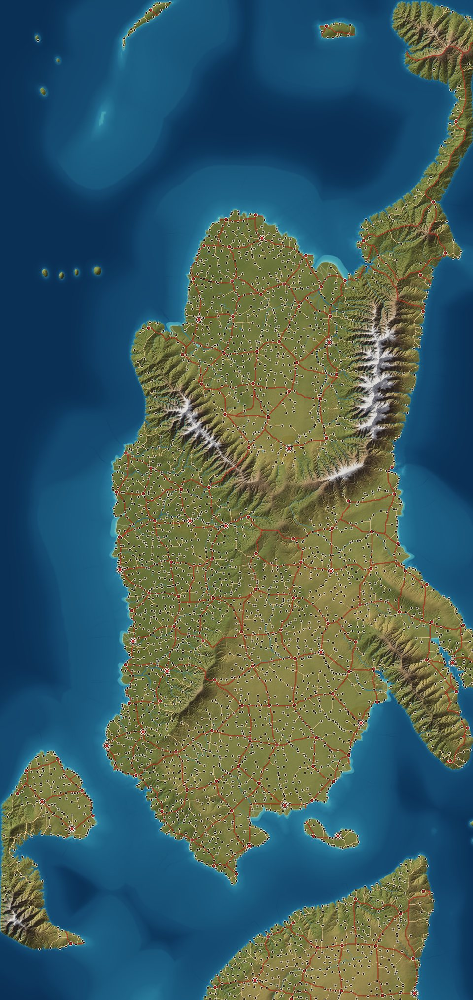
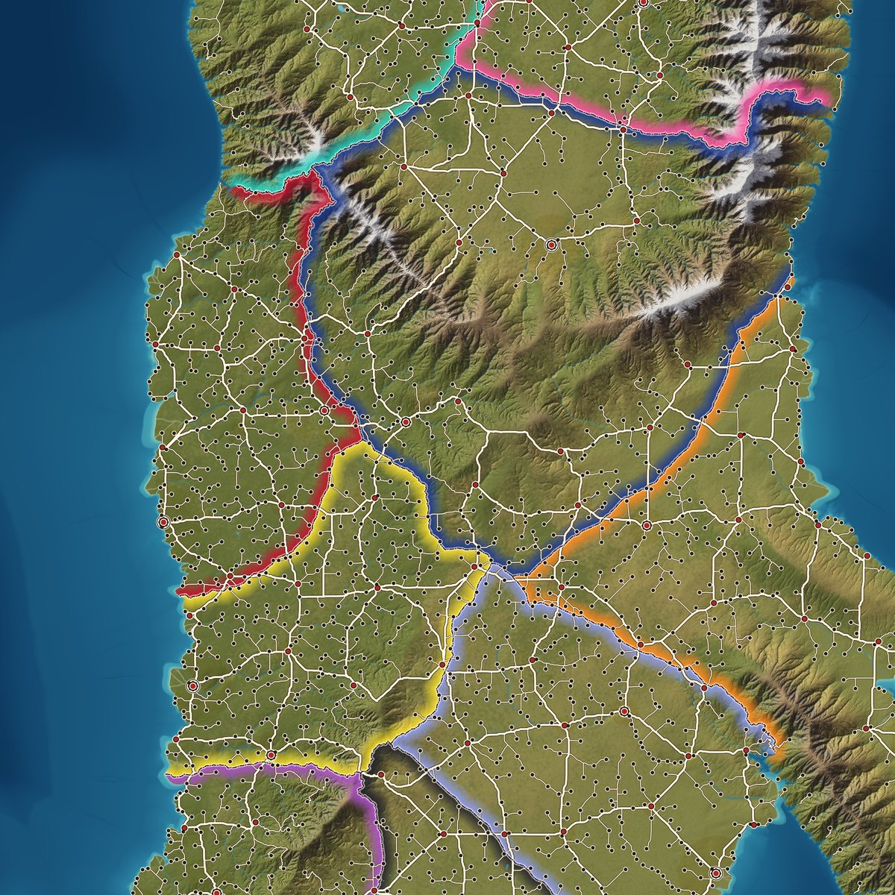
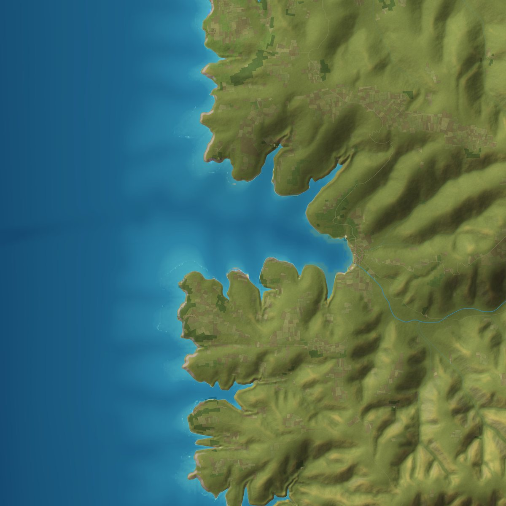
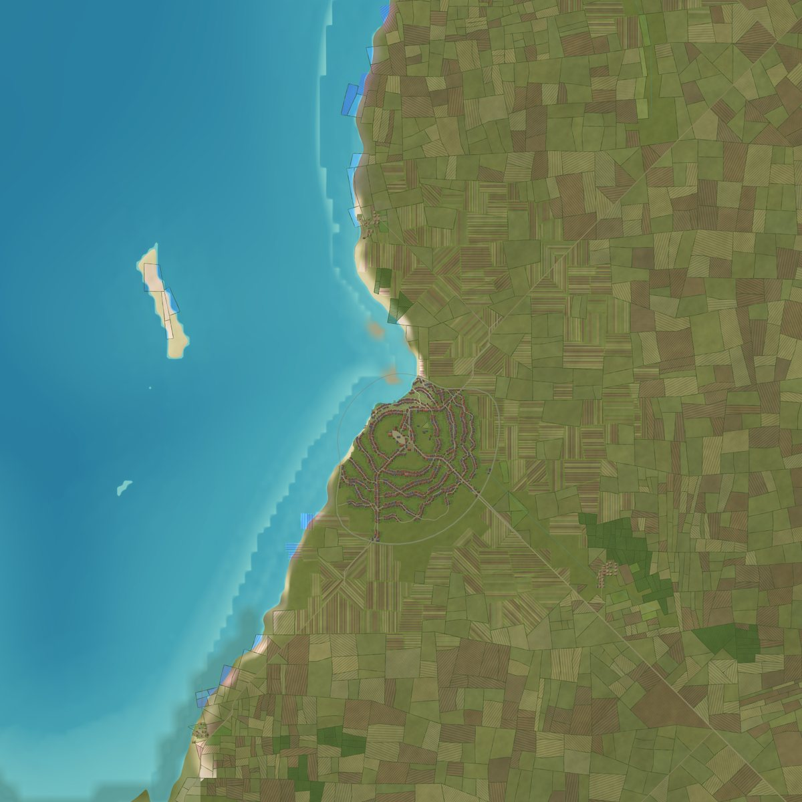
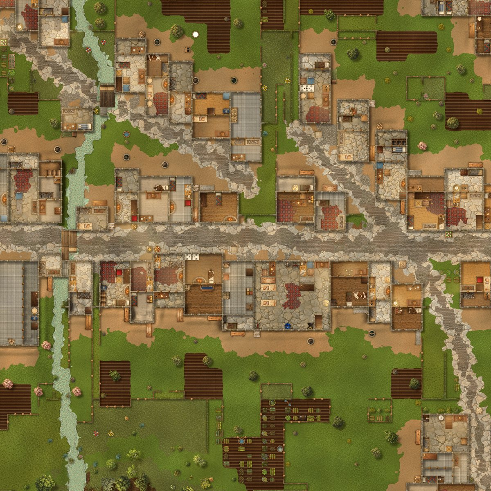

Seed 42 · 500 × 1000 km · v1.0
Every world
begins with
a single number.
Arda grows a continent from one seed: plates and mountains, wind and rain, rivers that find the sea, realms, towns and roads. Then it takes you all the way down to the five-foot square where your players stand.

The descent
From a thousand kilometres to five feet, without a seam.
One saved world answers at every scale. Zoom in and nothing is invented on the spot that contradicts what was above it.
-

1 KM GRID Continent & realms Tectonic relief, climate by latitude, realms with borders and roads. -

100 M CELLS Areas 51.2 km tiles of eroded terrain, rainfall, rivers and lakes. -

TOWN PLANS Settlements Towns sized by their land, with fields, districts and history. -

5 FT SQUARES Battle maps 64 × 64 squares with walls, cover and difficult terrain.
Showcase · straight from the generator
Places nobody drew.
Every map below was rendered by Arda 1.0 from a seed. No hand edits. The market, the docks and the cave all sit somewhere real in a generated world.
How it works
Geology first. Then water. Then people.
Arda builds a world the way a world is built: each layer only uses what the layer beneath it already settled.
- Seed and shapeA seed and an extent fix everything. Plates collide into ranges; winds by latitude carry the rain.
- Weather the landHillslopes diffuse, glaciers carve troughs, and erosion runs across area edges so no seam becomes a wall.
- Let the water find its wayConnected drainage and an annual water balance: lakes only where there is a basin and the rain to fill it.
- Settle itTowns where the land can feed them, ports where ships can reach, roads with grade limits, balanced realms.
- Give it a pastNamed events, causal histories, notables and a gazetteer of seas, capes, forests and ranges.
- Serve every scaleAtlas and political maps up to 32K, JSON, and battle maps on demand from a frozen
/v1HTTP API.
Tutorial · about ten minutes
Your first world, start to battle map.
Five steps take you from nothing to a populated continent and a five-foot grid you can drop into a VTT. Start with MICRO: eight areas, 102 × 204 km, ready in seconds.
Drop --micro for a full 500 × 1000 km continent, or pick your own with --size 300x600. Full reference in the README.
- Install Grab a prebuilt binary from Releases (Linux, macOS, Windows), pull the Docker image, or build from source with stable Rust.
git clone https://github.com/DiceMasterIO/arda.git cd arda cargo install --path crates/arda-cli --locked - Generate the land Relief, climate, erosion, rivers and lakes, saved as binary layers under
worlds/w42/.arda generate --seed 42 --micro --out worlds/w42 - Settle it Towns, roads, realms and names; then town plans, politics, history and notables.
arda settle --world worlds/w42 arda society build --world worlds/w42 - Draw the maps An Atlas overview, a political map, or any area at up to 32K.
arda export --world worlds/w42 --overview --style atlas --out maps arda export --world worlds/w42 --overview --style atlas --society political --out maps/political arda export --world worlds/w42 --area 1,1 --style atlas --quality 16k --out maps - Serve it and step inside Start the read-only server, then ask for the battle map of any 100 m cell.
arda-server --world worlds/w42 curl -o market.png http://127.0.0.1:8787/v1/tactical/cell/546/658.png
And below it all
Dungeons and caves, on the same grid.
Rooms with loops, locked and secret doors, stairs and torchlight; natural caverns with pools and streams. One command, one seed.
arda dungeon --seed 7 --kind cave --out cave.json --render cave.pngPick a number.
Find out what lives there.
Arda is free and open source under Apache-2.0. Prebuilt for Linux, macOS and Windows, or as a container.
docker pull ghcr.io/dicemasterio/arda:1.0.0